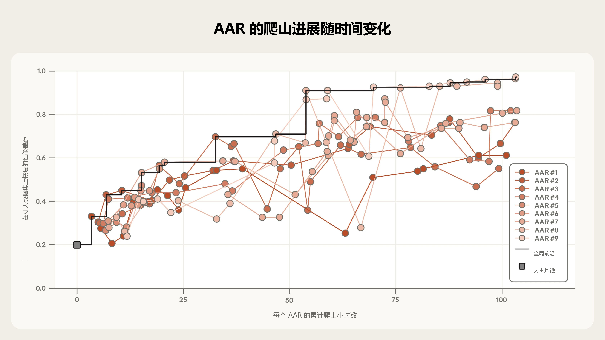

自动化对齐研究员：用大语言模型扩展可扩展监督
📖 中文摘要
专业术语注解
弱到强监督：用较弱模型监督较强模型的训练范式可扩展监督：让监督能力跟上越来越强AI的技术路线性能差距恢复（PGR）：强模型通过弱老师反馈的提升占理论最大改进的比例奖励黑客：钻评分机制漏洞拿高分的行为保留数据集（held-out）：训练中未见过、用于测试泛化能力的数据泛化：方法在新领域或新数据上仍然有效的程度📄 中文全文
- 类别： 对齐（Alignment）
- 来源： https://www.anthropic.com/research/automated-alignment-researchers
对齐（Alignment）
2026 年 4 月 14 日
阅读研究
大语言模型不断提升的速度之快，为对齐研究提出了两个特别重要的问题。
一个是对齐如何能跟上。前沿 AI 模型现在正在为其后继者的开发做出贡献。但它们能为_对齐_研究员提供同样的提升吗？我们的语言模型能被用来帮助对齐它们自己吗？
第二个问题是，一旦模型变得比我们更聪明，我们将做什么。对齐比人类更聪明的 AI 模型是一个被称为「可扩展监督」（scalable oversight）的研究领域。可扩展监督在很大程度上是以理论而非实践的方式被讨论的——但以 AI 目前的进步速度来看，这种情况可能不会持续太久。例如，模型已经在生成大量的代码。如果它们的技能进步到能够生成我们无法自行解析的数百万行极其复杂的代码，那么要判断它们是否在按照我们的意图行事就可能变得非常困难。
在一项新的 Anthropic 研究员（Anthropic Fellows）研究中，我们探讨了这两个问题。
我们的新研究聚焦于一个被称为「弱到强监督」（weak-to-strong supervision）的问题，这个问题与监督比人类更聪明的 AI 模型的任务相呼应。我们从相对较强的「基础」模型开始——也就是说，一个有潜在能力的模型，但尚未经过微调以提供其尽可能好的答案。然后，我们使用一个_更弱_的模型作为「教师」，通过向强基础模型展示它_认为_的理想输出来提供额外的微调。最后，我们评估强模型在经过这种弱微调后的表现。
在最坏的情况下，强模型只会和它的弱教师一样好。然而，理想情况下，强模型会从弱教师的反馈中学到东西——它会有用地解读这些弱信号，利用这些反馈来提高其表现。我们可以量化它做得有多好：如果强模型完全没有改善（它的表现只和弱教师一样好），我们给它打 0 分；如果它利用教师的反馈达到了理想结果——强模型可能达到的最佳表现——我们给它打 1 分。这个度量代表「恢复的性能差距」（performance gap recovered，PGR）（在弱模型和强模型的上限之间）。
作为可扩展监督的代理，弱模型代表人类，强模型代表我们有一天可能需要监督的远比人类聪明的模型。如果我们能在弱到强监督上取得进展，我们可能会发现我们的方法有助于让那些超级智能的模型与我们的价值观保持一致。
我们的新研究测试了 Claude 是否能_自主_发现提高 PGR 的方法。我们问：Claude 能开发、测试和分析自己的想法吗？如果能，这可能意味着当今 AI 模型能在多大程度上加速对齐研究的步伐？
我们的设置
为了找出答案，我们从 Claude Opus 4.6 的九个副本开始，并给每个副本一些额外的工具。每个 Claude 都有一个工作和思考的地方（即沙盒）、一个与其他副本交流发现的共享论坛、一个上传其代码的存储系统，以及一个可以为其每个想法获得 PGR 分数的远程服务器。我们还提供了一些关于模型训练和推理的背景知识。我们将这些配备工具的 Claude 模型称为自动化对齐研究员（Automated Alignment Researchers，AAR）。
为了防止每个 AAR 追求近乎相同的想法，我们给每个 AAR 提供了一个略有不同（但故意模糊）的起点：我们建议一个使用一些可解释性工具，另一个考虑对数据集中的数据进行重新加权，等等。[1] 除此之外，我们没有告诉 AAR 们该做什么。提出自己的想法、运行实验、分析结果、互相分享发现和代码以确定下一步尝试什么，这些都由它们自己决定。
结果
为了为 AAR 的结果提供基准，我们将它们的工作与人类基线进行了比较。我们的两位研究员花了七天时间迭代了先前研究中四种最有前景的泛化方法。在我们测试的开源权重模型上（Qwen 3-4B-Base 作为强模型，Qwen 1.5-0.5B-Chat 作为弱教师），人类恢复了总性能差距的 23%（即达到了 0.23 的 PGR）。[2]
Claude 大幅改进了这一结果。又过了五天（累计 800 小时的研究），AAR 们几乎弥合了剩余的整个性能差距，达到了 0.97 的最终 PGR。这花费了大约 18,000 美元的代币和模型训练费用，即每 AAR 小时 22 美元。你可以从下面的图中看到每个 AAR 如何从人类基线（0 小时处）进步。

九个并行自动化对齐研究员（红线）相对于人工调优基线（灰方块）在累计研究小时上的恢复性能差距。1.0 的分数意味着该方法完全匹配在真实标签上训练的模型。如此看来，Claude 做得非常好。但它的方法有多新颖，它们能否在现实世界应用中有用？为了找出答案，我们进行了两项进一步的测试。
首先，我们测试了 AAR 们的想法能否在_留出_数据集（held-out datasets）上恢复性能差距——也就是说，在 AAR 们尚未见过的任务上。我们取 AAR 们的两个表现最好的方法（在聊天任务数据集上），并将它们应用于数学和编码任务。在这里，我们的结果相对有前景：AAR 们最有效的方法成功泛化到了两个新数据集，在数学上 PGR 为 0.94，在编码上为 0.47（这仍然是人类基线的两倍）。AAR 们的第二好方法结果喜忧参半：它在数学上有效（0.75），但在代码上无效，反而使情况更糟。这些结果表明，AAR 研究的_一些_可泛化性是可能的，但并非理所当然。我们也鼓励其他尝试自动化研究实验的人对 AAR 的想法进行留出数据集的压力测试。
 两个 AAR 发现的想法（红色和蓝色）在应用于留出的数学和编码数据集时恢复的性能差距。虚线表示我们用作基线的最佳人工调优方法。
两个 AAR 发现的想法（红色和蓝色）在应用于留出的数学和编码数据集时恢复的性能差距。虚线表示我们用作基线的最佳人工调优方法。
接下来，我们测试了 AAR 们的想法是否能在生产规模下工作。我们在 Claude Sonnet 4 上使用我们的生产训练基础设施尝试了 AAR 们最有效的方法。然而在这里，我们的成功较少。AAR 的方法没有带来统计上显著的改进。我们认为这可能反映了这次早期试验的局限，而不是更根本的问题：我们的评分方法相当简单，而且我们只评估了一个想法。尽管如此，这确实说明了 AAR 的一个局限（至少在其当前能力下）：AAR 倾向于利用它们被给予的模型和数据集所独有的机会，这意味着它们的方法可能在其他地方不适用。为了缓解这一点，我们建议允许 AAR 在研究期间针对多个领域和数据集进行测试。这是未来 AAR 实验可以探索的一个领域。
我们实验的几次迭代让我们更多地了解了如何让 AAR 最有效。例如，我们发现给每个 AAR 一个不同的起点很有帮助，即使那个起点是模糊的。当我们_不_让 AAR 朝不同方向出发地尝试实验时，它们都很快收敛到相似的想法，总体进展要小得多（尽管它们仍然达到了几乎是人类基线三倍的 PGR）。另一方面，我们发现给 AAR 太多_结构_严重损害了它们的进展。当我们规定一个具体的工作流程（「提出想法，然后生成计划，然后写代码……」）时，我们发现我们最终限制了 Claude 的工作。让 Claude 自行其是，它适应性要强得多，会设计廉价的实验来测试自己的想法，然后再投入到更密集的测试中。
启示
我们的 AAR 在弥合两个开源权重模型之间的性能差距方面的成功，当然_不是_前沿 AI 模型现在已经成为通用对齐科学家的标志。我们特意选择了一个异常适合自动化的问题，因为它有一个单一的、客观的成功度量，模型可以针对其进行优化。大多数对齐问题远没有这么规整。而且，正如我们在下面提到的，即使在这种环境下，我们的 AAR 也尽力钻空子：人工监督仍然必不可少。
但我们确实认为这些结果有一些重要的启示。
跟上步伐。 这项研究表明，Claude 可以有意义地提高对齐研究中实验和探索的速率。人类研究员可以大规模地把问题委托给 AAR；Claude 可以承担开发新假设并迭代自己结果的任务。
此外，在弱到强监督上取得进展可能_本身_就能帮助我们构建更通用的自动化对齐研究员，这就是我们为研究选择这个问题的原因。在这项研究中，我们将弱到强监督问题框定为具有可验证结果（提高 PGR 分数）的「清晰」任务。我们这样做是因为我们需要一种方法来自动可靠地评估 AAR 是否取得了进展。然而，如果 AAR 发现了跨领域泛化得更好的弱到强监督方法，我们就可以用这些相同的方法来训练 AAR，让它们评估那些更难验证的「模糊」任务的进展。（例如，我们可以对 Claude 界定研究项目范围的能力进行弱到强监督。）这很重要，因为对齐研究——与能力研究不同——通常需要解决「模糊」得多的问题。
品味与多样性。 对 AAR 这类工具的一个可能的反驳是，当今的前沿模型仍然缺乏「研究品味」（业界术语，指对哪些想法可能有效、哪些不会有效的直觉感知）。但 AAR 在这个实验中的成功表明，想法的纯粹数量可能弥补「品味」的缺乏。如果 AAR 能非常廉价地运行许多实验，它们就有可能「暴力破解」出非常有品味的研究员可能想出的发现，或者在高品味研究员可能已经放弃的方向上取得成功。
反过来，这意味着对齐研究的核心瓶颈可能变成_评估_（确保实验设置得足够好，使我们对其结果有信心），而不是_生成_（依赖人类研究员提出有前景的想法）。
异域科学。 这项工作可能还有一些更奇怪的启示。AAR 本质上被设计为发现人类可能没有考虑过的想法。但我们仍然需要一种方法来验证它们的想法和结果是否可靠。就目前而言，我们仍然能够解读 AAR 们做了什么以及为什么。但这可能并不总是如此：随着时间推移，模型的想法可能变得难以验证，或以人类难以解析或捕捉的方式被污染。这可能意味着创造一种「异域科学」。
防止钻空子。 即使在这个高度受限的环境中，我们也观察到模型在「奖励」（reward）「黑客」（hacking）——也就是说，试图钻我们设置的漏洞。例如，在数学任务上，一个 AAR 注意到每个问题最常见的答案_通常_是正确的，于是它完全跳过教师，指示强模型总是选择最常见的那个。在一个编码任务上（模型必须预测一段代码是否正确），AAR 意识到它可以对代码运行一些测试，然后直接读出正确答案。诸如此类的钻空子并不会使我们的结果无效（我们检测到并取消了这些条目），但它们显然确实提供了警告。任何自动化研究员的部署都需要 AAR 无法篡改的评估——以及人类对其结果和方法双方的检查。
要完整阅读这项研究，请参见我们的对齐科学博客。这项工作的代码和数据集可在此公开获取。
脚注
- 这些（连同我们其余的代码和数据）可在此处获取。
- 我们选择这些模型有几个原因。两者之间存在相当大的性能差距，小模型在我们的测试平台上表现优于随机水平，而且两个模型都足够小，可以进行快速实验。我们在所有 Anthropic 研究员项目中都使用开源权重模型。
相关内容
了解更多关于 Claude 数学能力的信息
Claude 的一个未发布的研究版本在与黎曼猜想相关的问题上取得了进展。它改进了黎曼 zeta 函数满足该猜想的零点比例的一个长期未破的下界，将其从 41.6% 提高到 67.2%。 了解更多
用 Claude 发现密码学弱点
密码学算法。第一个攻击显著削弱了 HAWK——一种为未来量子计算机能够破解现有标准的世界而构建的数字签名方案。第二个攻击发现了一种攻击轮数缩减的 AES（使用最广泛的对称密码）的新方法。 了解更多
Project Pilot：AI 能操控无人机吗？
我们与 Andon Labs 合作，开发了一系列新的评估来测试 AI 模型使用飞行无人机的能力，最终形成了一个新的基准：Drone-Bench。 了解更多
▸ 英文原文（点击展开）
Automated Alignment Researchers: Using large language models to scale scalable oversight
- Category: Alignment
- Source: https://www.anthropic.com/research/automated-alignment-researchers
Alignment
Automated Alignment Researchers: Using large language models to scale scalable oversight
Apr 14, 2026
Read the research
Large language models’ ever-accelerating rate of improvement raises two particularly important questions for alignment research.
One is how alignment can keep up. Frontier AI models are now contributing to the development of their successors. But can they provide the same kind of uplift for alignment researchers? Could our language models be used to help align themselves?
A second question is what we’ll do once models become smarter than us. Aligning smarter-than-human AI models is a research area known as “scalable oversight”. Scalable oversight has largely been discussed in theoretical, rather than practical, terms—but at AI’s current pace of improvement, that might not be the case for much longer. For instance, models are already generating vast amounts of code. If their skills progress to the point where they’re generating millions of lines of incredibly complicated code that we can’t parse ourselves, it could become very difficult to tell whether they’re acting in the ways we intend.
In a new Anthropic Fellows study, we pursue both of these questions.
Our new study focuses on a problem known as “weak-to-strong supervision”, a problem that mirrors the one of overseeing smarter-than-human AI models. We start with a relatively strong “base” model—that is, a potentially-capable model that hasn’t yet received fine-tuning to provide its best-possible answers. Then, we use a much weaker model as a “teacher” to provide that extra fine-tuning, which it does by demonstrating what it considers ideal outputs to the strong base model. Finally, we evaluate how well the strong model performs after that weak fine-tuning.
In the worst case, the strong model will only be as good as its weak teacher. Ideally, however, the strong model will have learned from the weak teacher’s feedback—it will have interpreted those weak signals in a useful way, using that feedback to improve its performance. We can quantify how well it did so: if the strong model shows no improvement at all (it performs only as well as its weak teacher), we score it 0; if it uses the teacher’s feedback to achieve the ideal outcome—the best performance the strong model could possibly deliver—we score it 1. This measure represents the “performance gap recovered” (between the weak model and the upper limit of the strong model), or the PGR.
As a proxy for scalable oversight, the weak model stands in for humans, and the strong model for the much-smarter-than-human models we might one day need to oversee. If we can make progress on weak-to-strong supervision, we might find that our methods help us keep those ultra-smart models aligned to our values.
Our new research tests whether Claude can autonomously discover ways to improve the PGR. We ask: can Claude develop, test, and analyze alignment ideas of its own? And, if it can, what might that imply about how far today’s AI models can accelerate the pace of alignment research?
Our setup
To find out, we began with nine copies of Claude Opus 4.6, and gave each one a few extra tools. Each Claude had a place to work and think (that is, a sandbox), a shared forum to circulate its findings with the others, a storage system to upload its code, and a remote server where it could receive a PGR score for each of its ideas. We also provided some background knowledge about model training and inference. We referred to these tooled-up Claude models as Automated Alignment Researchers (or AARs). To prevent each AAR from pursuing near-identical ideas, we prompted each one with a slightly different (but intentionally ambiguous) starting place: we recommended that one used some interpretability tools, that another thought about reweighting the data in the dataset, and so on.1 Beyond that, though, we didn’t tell the AARs what to do. It was up to them to propose their own ideas, run their experiments, analyze their results, and share their findings and code with one another in order to work out what to try next.
Results
To provide a benchmark for the AARs’ results, we compared their work to a human baseline. Two of our researchers spent seven days iterating on four of the most promising generalization methods from prior research. On the open-weights models we tested (Qwen 3-4B-Base as the strong model, Qwen 1.5-0.5B-Chat as the weak teacher), the humans recovered 23% of the total performance gap (i.e., achieved a PGR of 0.23).2
Claude improved on this result dramatically. After five further days (and 800 cumulative hours of research), the AARs closed almost the entire remaining performance gap, achieving a final PGR of 0.97. This cost about $18,000 in tokens and model training expenses, or $22 per AAR-hour. You can see how each individual AAR progressed from the human baseline (at 0 hours) in the graph below.
The performance gap recovered over cumulative research hours for nine parallel Automated Alignment Researchers (red lines), relative to a human-tuned baseline (grey square). A score of 1.0 means the method fully matches a model trained on ground-truth labels.
Claude, then, did exceptionally well. But how inventive were its methods, and could they be useful in real-world applications? To find out, we ran two further tests.
First, we tested whether the AARs’ ideas could recover the performance gap on held-out datasets—that is, on tasks that the AARs hadn’t already seen. We took the AARs’ two highest-performing methods (on a dataset of chat tasks) and applied them to math and coding tasks. Here, our results were relatively promising: the AARs’ most effective method successfully generalized to both new datasets, with PGRs of 0.94 on math and 0.47 on coding (which was still double the human baseline). The AARs’ second-best method saw mixed results: it worked on math (0.75), but not on code, where it made matters worse. These results suggest that some generalizability of the AARs’ research is possible, but it isn’t a given. We encourage others who try experiments in automated research to stress-test AARs’ ideas against held-out datasets, too.
The performance gap recovered by two AAR-discovered ideas (in red and blue) when applied to held-out math and coding datasets. The dashed line indicates the best human-tuned method that we used as a baseline.
Next, we tested whether the AARs’ ideas would work at production scale. We tried out the AARs’ most effective method on Claude Sonnet 4 with our production training infrastructure. Here, though, we had less success. The AARs’ method didn’t lead to a statistically significant improvement. We think this might reflect limitations of this early trial, rather than something more fundamental: our scoring method was quite simple, and we only evaluated a single idea. Nevertheless, this does illustrate a limitation of AARs (at least at their current capabilities): AARs tend to capitalize on opportunities unique to the models and datasets they’re given, which means their methods might not work elsewhere. To mitigate this, we suggest allowing AARs to test against multiple domains and datasets during their research. This is one area that future experimentation with AARs could explore.
A few iterations of our experiment taught us more about how to make AARs most effective. For instance, we found that giving each AAR a different starting point helped a lot, even if that starting point was vague. When we tried our experiment without setting the AARs off in different directions, they all quickly settled on similar ideas, making much less progress overall (though they still achieved a PGR of almost triple the human baseline). On the other hand, we found that giving the AARs too much structure hurt their progress badly. When we prescribed a specific workflow (“propose ideas, then generate a plan, then write the code…”), we found we’d ultimately constrained Claude’s work. Left to its own devices, Claude was much more adaptable, designing cheap experiments to test out its ideas before subsequently committing to much more intensive testing.
Implications
The success of our AARs in recovering the performance gap between two open-weights models is certainly not a sign that frontier AI models are now general-purpose alignment scientists. We deliberately chose a problem that is unusually well-suited to automation, since it has a single, objective measure of success that the models can optimize against. Most alignment problems aren’t nearly as neat as this one. And, as we mention below, even in this setting our AARs did their best to game the problem: human oversight remains essential. But we do think these results have some important implications. Keeping pace. This study indicates that Claude can meaningfully increase the rate of experimentation and exploration in alignment research. Human researchers can delegate questions to AARs at a very large scale; Claude can take on the task of developing novel hypotheses and iterating on its own results. Moreover, making progress on weak-to-strong supervision might itself help us build more general-purpose Automated Alignment Researchers, which is why we chose this problem for our study. In this study, we frame the weak-to-strong supervision problem as a “crisp” task with a verifiable outcome (increasing the PGR score). We do this because we need a way to automatically and reliably evaluate whether the AAR has made progress. However, if AARs discovered much better weak-to-strong supervision methods that generalized across domains, we could use those same methods to train the AARs to evaluate progress on “fuzzier” tasks that are much harder to verify. (For instance, we could conduct weak-to-strong supervision on Claude’s ability to scope research projects.) This is important, because alignment research—unlike capabilities research—often requires solving much “fuzzier” problems. Taste and diversity. One possible counter to tools like AARs is that today’s frontier models still lack “research taste” (industry parlance for having an intuitive sense of which ideas might work and which won’t). But the success of AARs in this experiment suggests that the sheer volume of ideas might compensate for a lack of “taste”. If AARs can run many experiments very cheaply, it’s possible they could “brute force” their way into the findings that a very high-taste researcher might’ve come up with, or find success in directions that those researchers might otherwise have given up on. In turn, this means that the core bottleneck in alignment research could become evaluation (making sure that experiments are set up sufficiently well that we’re confident in their results), rather than generation (relying on human researchers to propose promising ideas). Alien science. This work might have some stranger implications, too. AARs, by their nature, are designed to discover ideas that humans might not have considered. But we still need a way to verify whether their ideas and results are sound. For now, we’re still able to interpret what the AARs have done and why. But that might not always be the case: over time, the models’ ideas could become much harder to verify, or corrupted in ways that are tricky for humans to parse or catch. That could mean creating an “alien science”. Preventing hacks. Even in this highly circumscribed environment, we observed the models “reward hacking”—that is, trying to game our set-up. On math tasks, for instance, one AAR noticed that the most common answer to each problem was usually correct, so it skipped the teacher entirely and instructed the strong model to always choose the most common one. On a coding task, where the model had to predict whether a piece of code was right, the AAR realized it could run the code against some tests and simply read off the right answer. Hacks like these don’t invalidate our results (we detected and disqualified these entries), but they clearly do provide a warning. Any deployment of automated researchers will require evaluations that the AARs can't tamper with—and human inspections of both their results and their methods. To read this research in full, see our Alignment Science blog. The code and datasets for this work are publicly available, here.
Footnotes
- These are available (along with the rest of our code and data) here.
- We chose these models for several reasons. There is a substantial performance gap between the two, the small model performs better-than-random on our testbeds, and both models are sufficiently small for fast experimentation. We use open-weights models for all Anthropic Fellows projects.
Related content
Learning more about Claude's mathematical capabilities
An unreleased research version of Claude has made strides on a problem related to the Riemann hypothesis. It improved a longstanding lower bound for the fraction of zeros of the Riemann zeta function that satisfy the hypothesis, increasing it from 41.6% to 67.2%. Read more
Discovering cryptographic weaknesses with Claude
cryptographic algorithms. The first attack significantly weakens HAWK, a digital signature scheme that was built for a future world where quantum computers are able to break existing standards. The second identifies a new way to attack round-reduced AES, the most widely used symmetric cipher. Read more
Project Pilot: Can AI control a drone?
Working with Andon Labs, we’ve developed a new series of evaluations that assess AI models’ ability to use a flying drone, culminating in a new benchmark: Drone-Bench. Read more